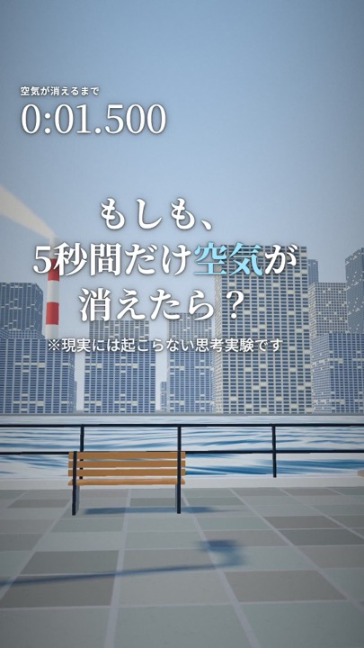
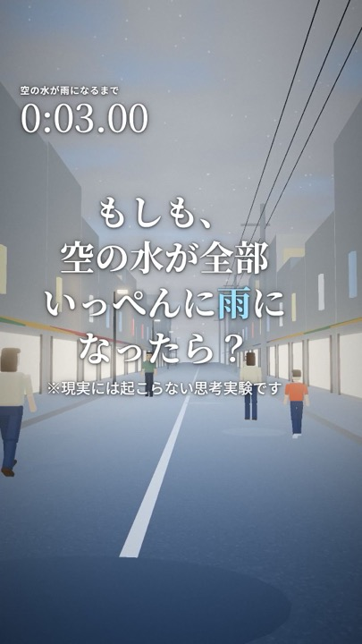

消える系
もしも、5秒間だけ空気が消えたら？
音も、風も、浮力も消えた5秒間。
本サイトは講義課題として制作したものです。（実在しない仮想企業です）
スマホで動画を見る10〜20代に「科学っておもしろい」と感じてもらうこと。それが私たちの目的です。
すき間時間に、驚きと「へえ」がほしい人へ。毎日7:00と18:00に新作を公開。
重力や気圧など、目に見えない物理を生徒に「見せたい」先生へ。授業用の動画を作ります。
商品やイベントを「もしも」の切り口で話題にしたい担当者へ。
YouTube ショートで3Dシミュレーション動画を毎日2本公開しています。
単元に合わせた「もしも」を企画し、数字の根拠つきで授業用に制作します。
商品やサービスを主役にした、思わず最後まで見てしまう縦型動画を作ります。

音も、風も、浮力も消えた5秒間。
台所のお茶わんから街の車まで。

空にある水の量を実際に計算。
電柱、ビル、山、そして雲の上へ。